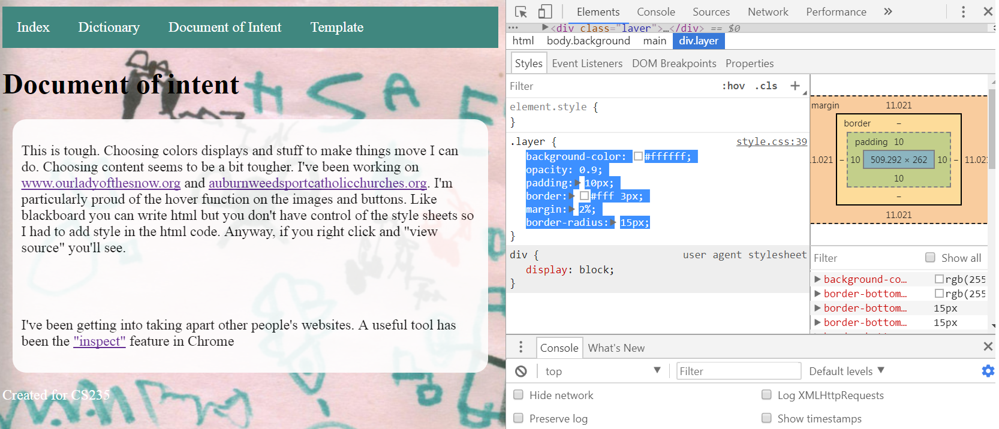

This is tough. Choosing colors displays and stuff to make things move I can do. Choosing content seems to be a bit tougher. I've been working on www.ourladyofthesnow.org and auburnweedsportcatholicchurches.org. I'm particularly proud of the hover function on the images and buttons. Like blackboard you can write html but you don't have control of the style sheets so I had to add style in the html code. Anyway, if you right click and "view source" you'll see.
I've been getting into taking apart other people's websites. A useful tool has been the "inspect" feature in Chrome
I used Chromes inspect tool to do some fine tuning styling to this page. Check out my screenshot
It seems like rounded corners are in. I did this with the border-radius.
Can my project be just the documentation of my HTML5 CSS3 Javascript Journey? I'm still working on these buttons though